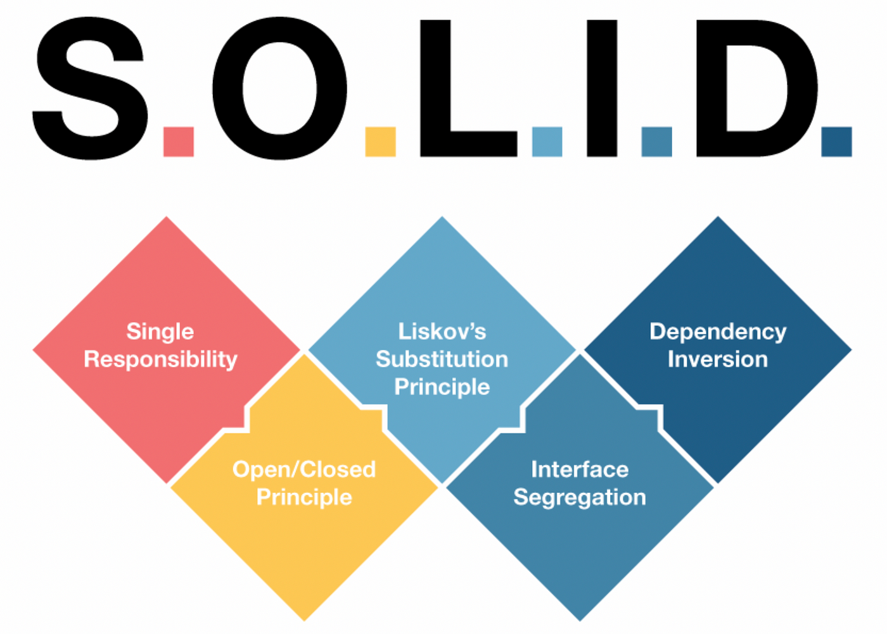
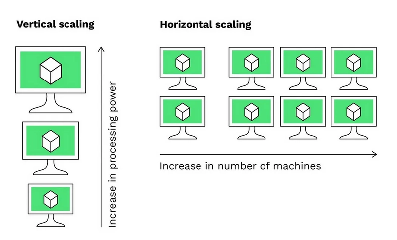
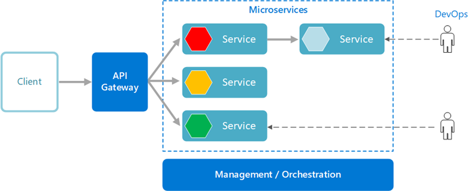

1.2 Core Principles of Microservices
🧱 SOLID Principles
SOLID is a set of 5 design principles that help make your software easy to understand, flexible, and maintainable.
| Principle | Name | Simple Meaning |
|---|---|---|
| S | Single Responsibility Principle (SRP) | A class should do only one job. Don't mix responsibilities. |
| O | Open/Closed Principle (OCP) | Software should be open for extension, but closed for modification. Add new code without changing old code. |
| L | Liskov Substitution Principle (LSP) | A subclass should behave like its parent. Replacing the parent with a child should not break the app. |
| I | Interface Segregation Principle (ISP) | Don't force a class to implement unneeded methods. Use small, specific interfaces. |
| D | Dependency Inversion Principle (DIP) | Code should depend on abstractions, not on concrete implementations. Use interfaces instead of tightly coupled classes. |

✅ Other Common Design Principles
| Principle | Meaning |
|---|---|
| DRY (Don't Repeat Yourself) | Don’t copy-paste code. Reuse logic through functions, classes, etc. |
| KISS (Keep It Simple, Stupid) | Keep your code simple and avoid unnecessary complexity. |
| YAGNI (You Ain’t Gonna Need It) | Don’t build something until you actually need it. |
| Separation of Concerns (SoC) | Keep different parts of the system separate. UI, logic, and data should be in different layers. |
| Composition over Inheritance | Prefer combining small objects over using large class hierarchies. |
🎯 Why are these important?
These principles help you:
- Write clean, testable, and maintainable code.
- Reduce bugs, duplication, and tight coupling.
- Make your app more flexible to change.
🧭 Decentralization in Microservices
Decentralization means that each microservice manages its own logic, data, and decisions, rather than relying on a central system to control everything.
✅ What it means:
- No central brain: Each service is independent and doesn’t wait for a "master service" to tell it what to do.
- Own database: Each service has its own database, instead of sharing one big database.
- Own responsibilities: Each service handles its own tasks, rules, and errors.
📦 Example:
- In a monolithic app, a central module might handle all payments.
- In microservices, the payment service does everything related to payments, including rules, storing data, and processing — without needing other services to do it for it.
🎯 Why it matters:
- Reduces tight coupling.
- Increases autonomy and scalability.
- Teams can work independently.
- Services can be deployed or updated without affecting others.
📈 Scalability and Autonomy in Microservices
🚀 Scalability in Microservices
Scalability means the ability of your system to handle more load (users, data, traffic) by adding more resources.
✅ In Microservices:
- You can scale only the service that needs more resources, not the whole application.
- Example: If the "Order Service" is getting more traffic than others, you can deploy more instances of just that service.
🔧 Types of Scalability:
- Horizontal scaling – Add more service instances (most common).
- Vertical scaling – Give more CPU/RAM to existing instances (limited and expensive).

🧠 Autonomy in Microservices
Autonomy means each microservice is independent and can make decisions, run, and be deployed on its own.
✅ In Microservices:
- Services have their own code, data, and logic.
- Teams can build, test, and deploy their services without coordinating with others.
- Example: The "Payment Service" doesn’t need the "User Service" to function or deploy.
 (source:https://learn.microsoft.com/en-us/azure/architecture/guide/architecture-styles/microservices)
🎯 Benefits:
| Aspect | Benefit |
|---|---|
| Scalability | Efficient use of resources, performance under high load. |
| Autonomy | Faster development, independent deployments, fewer dependencies. |
📄 API Contracts in Microservices
🧾 What is an API Contract?
An API Contract is a written agreement (or definition) between microservices that defines:
- What endpoints are available (
/orders,/users) - What data to send (request)
- What data to expect back (response)
- What status codes might be returned
It’s like a mutual promise between services:
“If you call me like this, I will respond like that.”
🤝 Why API Contracts Are Important
In Microservices:
- Services are independent.
- They talk via APIs (e.g., REST, gRPC, messaging).
- You need a clear contract to ensure they communicate correctly.
📦 Example (Simple REST Contract)
Order Service API Contract:
| Method | Endpoint | Request Body | Response Body |
|---|---|---|---|
| POST | /orders |
{ "productId": 1, "qty": 2 } |
{ "orderId": 123 } |
| GET | /orders/123 |
— | { "orderId": 123, "status": "Shipped" } |
This tells consumers (like UI or another service) what to send and what to expect.
🛠 Tools for API Contracts
- OpenAPI / Swagger – For REST APIs
- gRPC Protobufs – For gRPC APIs
- AsyncAPI – For message-based communication
- Postman / Stoplight – For testing and documenting contracts
- Pact – For contract testing between services
✅ Benefits
- Clear communication between services
- Early validation of integrations
- Safer changes (breaking changes are avoided)
- Contract testing ensures compatibility